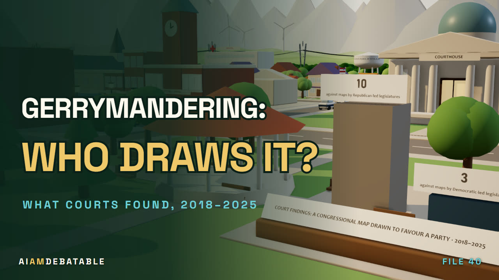
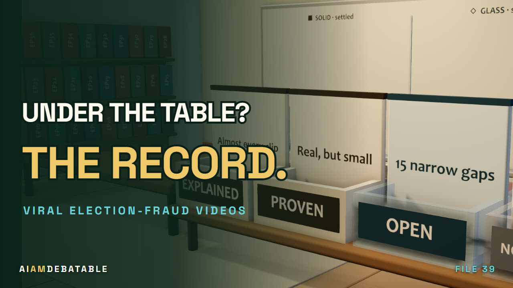

For most people, no premium beyond Part B, a yearly cap Original Medicare doesn't have, and extras like dental and hearing. Against having no supplement, people who picked a plan at 65 spent less at every level studied. Fix the denials; don't throw away the cap.
Not what to think. What to ask.
Just watched an episode? Here's everything behind it.
Every number you heard, where it came from, and what our fact-check caught before it aired.
Searches every title and all 4,716 claims in the fact-check logs.

Against Original Medicare with a supplement, people who switched saw no clear saving. Plans say no most often after a hospital stay, and in most states the way back to a supplement shuts after 65. You pay more each month for the year you hope never comes.
- Two teams, full strength. Green and Gold each make the best honest case. No strawmen.
- A judge, no winner. What's settled, what survived from each side, what fell.
- You set the dial. The one trade-off nobody can choose for you.
4,716 claims checked across 43 episodes. 567 came back wrong in our own drafts, and every one is in the published logs.
The last few
 Will AI cause mass unemployment, or just change the jobs?
Will AI cause mass unemployment, or just change the jobs? Will banning big investors from buying family homes make homes cheaper?
Will banning big investors from buying family homes make homes cheaper? When you register to vote, should the state take your word, check its records, or ask for paper?
When you register to vote, should the state take your word, check its records, or ask for paper?
Who should draw your district: the party in power, or someone else?
Viral election-fraud videos: what did they really show, and how can you tell? If America makes its own oil, why is gas over $4 a gallon, and what can the government actually do about it?
If America makes its own oil, why is gas over $4 a gallon, and what can the government actually do about it?
We got it wrong first
What the fact-check caught before it aired.
Our drafts get things wrong. Every claim goes through a separate check, and every correction stays in the published log. A few of them:
The archive
Every question we've argued
-
File 44 · Health, schools & life · 20:18
Is Medicare Advantage a better deal for you than Original Medicare, and who pays for the extras?
Take the advantagevsKeep the original532 claims checked36 caught and corrected
▶ Watch Is Medicare Advantage a better deal for you than Original Medicare, and who pays for the extras?The case file: Is Medicare Advantage a better deal for you than Original Medicare, and who pays for the extras? →
-
File 46 · AI & tech · 21:54
Will AI cause mass unemployment, or just change the jobs?
Faster Than It LooksvsThe Jobs Change420 claims checked41 caught and corrected
▶ Watch Will AI cause mass unemployment, or just change the jobs?The case file: Will AI cause mass unemployment, or just change the jobs? →
-
File 47 · Money & work · 19:06
Will banning big investors from buying family homes make homes cheaper?
Protect the starter homevsWrong target, renters pay366 claims checked37 caught and corrected
▶ Watch Will banning big investors from buying family homes make homes cheaper?The case file: Will banning big investors from buying family homes make homes cheaper? →
-
File 41 · Democracy & rights · 22:22
When you register to vote, should the state take your word, check its records, or ask for paper?
Prove it at the doorvsLet the state check177 claims checked22 caught and corrected
▶ Watch When you register to vote, should the state take your word, check its records, or ask for paper?The case file: When you register to vote, should the state take your word, check its records, or ask for paper? →
-
File 40 · Democracy & rights · 18:38
Who should draw your district: the party in power, or someone else?
Lawmakers draw, voters judgevsTake the pen from the party in power182 claims checked23 caught and corrected
▶ Watch Who should draw your district: the party in power, or someone else?The case file: Who should draw your district: the party in power, or someone else? →
-
File 39 · Democracy & rights · 15:57
Viral election-fraud videos: what did they really show, and how can you tell?
Explainer539 claims checked53 caught and corrected
▶ Watch Viral election-fraud videos: what did they really show, and how can you tell?The case file: Viral election-fraud videos: what did they really show, and how can you tell? →
-
File 38 · Money & work · 20:19
If America makes its own oil, why is gas over $4 a gallon, and what can the government actually do about it?
Pull the leversvsKeep the cushion296 claims checked36 caught and corrected
▶ Watch If America makes its own oil, why is gas over $4 a gallon, and what can the government actually do about it?The case file: If America makes its own oil, why is gas over $4 a gallon, and what can the government actually do about it? →
-
File 37 · Democracy & rights · 22:41
When a mail ballot shows up after Election Day, how do we know it's real, and should it count?
Prove it, then count itvsIn hand by election day203 claims checked19 caught and corrected
▶ Watch When a mail ballot shows up after Election Day, how do we know it's real, and should it count?The case file: When a mail ballot shows up after Election Day, how do we know it's real, and should it count? →
-
File 36 · Health, schools & life · 20:10
Should colleges be on the hook when a degree doesn't pay?
Put colleges on the hookvsFix price and finishing219 claims checked15 caught and corrected
▶ Watch Should colleges be on the hook when a degree doesn't pay?The case file: Should colleges be on the hook when a degree doesn't pay? →
-
File 35 · Money & work · 22:24
Should the law shorten your week, or should your boss?
Set it by lawvsSet it at work167 claims checked25 caught and corrected
▶ Watch Should the law shorten your week, or should your boss?The case file: Should the law shorten your week, or should your boss? →
-
File 34 · Health, schools & life · 19:34
Is a four-year degree worth what it really costs, for you?
Price it by fieldvsCut the bill347 claims checked31 caught and corrected
▶ Watch Is a four-year degree worth what it really costs, for you?The case file: Is a four-year degree worth what it really costs, for you? →
-
File 33 · Health, schools & life · 21:43
Should your health plan pay for weight-loss drugs, and for whom, at what price?
Pay by riskvsLifestyle first217 claims checked24 caught and corrected
▶ Watch Should your health plan pay for weight-loss drugs, and for whom, at what price?The case file: Should your health plan pay for weight-loss drugs, and for whom, at what price? →
-
File 30 · Democracy & rights · 10:10
What actually happens to your ballot after you let go of it, and how much of it can you watch?
Explainer156 claims checked18 caught and corrected
▶ Watch What actually happens to your ballot after you let go of it, and how much of it can you watch?The case file: What actually happens to your ballot after you let go of it, and how much of it can you watch? →
-
File 28 · Democracy & rights · 16:02
What should a newsroom, and you, do with an election poll?
Read the averagevsStop calling it news30 claims checked7 caught and corrected
▶ Watch What should a newsroom, and you, do with an election poll?The case file: What should a newsroom, and you, do with an election poll? →
-
File 31 · AI & tech · 20:56
When the people building AI say it might end us, how much of that is knowledge, how much is fear, and how much is marketing — and how would you tell?
Believe themvsWeigh them133 claims checked20 caught and corrected
▶ Watch When the people building AI say it might end us, how much of that is knowledge, how much is fear, and how much is marketing — and how would you tell?The case file: When the people building AI say it might end us, how much of that is knowledge, how much is fear, and how much is marketing — and how would you tell? →
-
File 29 · Democracy & rights · 17:17
Should Americans be allowed to bet on elections, and if so, who should be barred?
Let them tradevsBar the bets33 claims checked9 caught and corrected
▶ Watch Should Americans be allowed to bet on elections, and if so, who should be barred?The case file: Should Americans be allowed to bet on elections, and if so, who should be barred? →
-
File 32 · Money & work · 21:28
Tariffs raise what you pay. Is what they buy worth it?
Not at this pricevsWorth paying for201 claims checked34 caught and corrected
▶ Watch Tariffs raise what you pay. Is what they buy worth it?The case file: Tariffs raise what you pay. Is what they buy worth it? →
-
File 27 · Democracy & rights · 20:07
A fake video of a candidate lands in your feed: should it be illegal, just labelled, or left to counter-speech?
Answer itvsDraw a line32 claims checked7 caught and corrected
▶ Watch A fake video of a candidate lands in your feed: should it be illegal, just labelled, or left to counter-speech?The case file: A fake video of a candidate lands in your feed: should it be illegal, just labelled, or left to counter-speech? →
-
File 25 · AI & tech · 8:18
What is a personal AI agent, how does it work, and how often does it actually finish the job?
ExplainerFull fact-check log published
▶ Watch What is a personal AI agent, how does it work, and how often does it actually finish the job?The case file: What is a personal AI agent, how does it work, and how often does it actually finish the job? →
-
File 23 · AI & tech · 21:43
Is AI building the next AI, and would we know?
Count the resultsvsWatch the curve52 claims checked9 caught and corrected
▶ Watch Is AI building the next AI, and would we know?The case file: Is AI building the next AI, and would we know? →
-
File 22 · AI & tech · 23:02
When an AI breaks out in training, which brake works?
Fix the rewardvsWall it in49 claims checked17 caught and corrected
▶ Watch When an AI breaks out in training, which brake works?The case file: When an AI breaks out in training, which brake works? →
-
File 26 · AI & tech · 8:21
How does the same AI agent change when your employer, not you, is the customer?
ExplainerFull fact-check log published
▶ Watch How does the same AI agent change when your employer, not you, is the customer?The case file: How does the same AI agent change when your employer, not you, is the customer? →
-
File 21 · AI & tech · 22:07
Does banning public AI tools at work protect company secrets, or just move the leak to personal phones the company cannot see?
Ban the data, not the toolvsBlock the public tools51 claims checked17 caught and corrected
▶ Watch Does banning public AI tools at work protect company secrets, or just move the leak to personal phones the company cannot see?The case file: Does banning public AI tools at work protect company secrets, or just move the leak to personal phones the company cannot see? →
-
File 24 · Energy & the land · 6:09
What is in a data center, how does it work, and how much power and water does it really use?
ExplainerFull fact-check log published
▶ Watch What is in a data center, how does it work, and how much power and water does it really use?The case file: What is in a data center, how does it work, and how much power and water does it really use? →
-
File 20 · AI & tech · 25:13
Anthropic's CEO offered outside evaluators badges, desks and the right to publish; OpenAI, xAI and Microsoft said yes within hours; Meta's CEO said safety is each company's own job and Nvidia's said run as fast as you can. When a lab reports on itself, is self-policing plus voluntary disclosure enough, or does someone outside get a say?
Nobody outside could havevsYou only know what they looked forFull fact-check log published
▶ Watch Anthropic's CEO offered outside evaluators badges, desks and the right to publish; OpenAI, xAI and Microsoft said yes within hours; Meta's CEO said safety is each company's own job and Nvidia's said run as fast as you can. When a lab reports on itself, is self-policing plus voluntary disclosure enough, or does someone outside get a say?The case file: Anthropic's CEO offered outside evaluators badges, desks and the right to publish; OpenAI, xAI and Microsoft said yes within hours; Meta's CEO said safety is each company's own job and Nvidia's said run as fast as you can. When a lab reports on itself, is self-policing plus voluntary disclosure enough, or does someone outside get a say? →
-
File 19 · AI & tech · 24:08
A mathematician fed a year of unpublished drafts into OpenAI's Codex, then watched OpenAI announce a proof of the problem he was closing in on. The lab says no user input after July 3 could have influenced it — and cannot rule out that de-identified usage improved the model. Is the risk of handing your work to an AI lab real, or is the leak always a human?
The switch covers youvsNo setting covers itFull fact-check log published
▶ Watch A mathematician fed a year of unpublished drafts into OpenAI's Codex, then watched OpenAI announce a proof of the problem he was closing in on. The lab says no user input after July 3 could have influenced it — and cannot rule out that de-identified usage improved the model. Is the risk of handing your work to an AI lab real, or is the leak always a human?The case file: A mathematician fed a year of unpublished drafts into OpenAI's Codex, then watched OpenAI announce a proof of the problem he was closing in on. The lab says no user input after July 3 could have influenced it — and cannot rule out that de-identified usage improved the model. Is the risk of handing your work to an AI lab real, or is the leak always a human? →
-
File 18 · AI & tech · 22:27
X says it removed a 200,000-account suspected-Chinese bot farm, 200 of them pushing data-center grid-and-price claims; OpenAI found the same operation and no evidence it reached anyone. Same record, two readings: a foreign hand on American anger, or a non-story dressed as a national threat. Which does the record support?
A non-storyvsA foreign handFull fact-check log published
▶ Watch X says it removed a 200,000-account suspected-Chinese bot farm, 200 of them pushing data-center grid-and-price claims; OpenAI found the same operation and no evidence it reached anyone. Same record, two readings: a foreign hand on American anger, or a non-story dressed as a national threat. Which does the record support?The case file: X says it removed a 200,000-account suspected-Chinese bot farm, 200 of them pushing data-center grid-and-price claims; OpenAI found the same operation and no evidence it reached anyone. Same record, two readings: a foreign hand on American anger, or a non-story dressed as a national threat. Which does the record support? →
-
File 17 · Energy & the land · 25:24
When a community says no to a data center, is a moratorium the only tool that works — or the one that guarantees it gets nothing?
Rules, not bansvsThe right to say no27 claims checked6 caught and corrected
▶ Watch When a community says no to a data center, is a moratorium the only tool that works — or the one that guarantees it gets nothing?The case file: When a community says no to a data center, is a moratorium the only tool that works — or the one that guarantees it gets nothing? →
-
File 16 · Energy & the land · 24:43
The Park Service put 19 wolves back on Isle Royale in 2018-19; the moose are down 75%, one food-conditioned wolf has been shot, and tent camping is banned at four campgrounds through October. Who is the island for — and when the wilderness stops working, who intervenes, on which animal?
Manage the wildernessvsManage the visitorFull fact-check log published
▶ Watch The Park Service put 19 wolves back on Isle Royale in 2018-19; the moose are down 75%, one food-conditioned wolf has been shot, and tent camping is banned at four campgrounds through October. Who is the island for — and when the wilderness stops working, who intervenes, on which animal?The case file: The Park Service put 19 wolves back on Isle Royale in 2018-19; the moose are down 75%, one food-conditioned wolf has been shot, and tent camping is banned at four campgrounds through October. Who is the island for — and when the wilderness stops working, who intervenes, on which animal? →
-
File 15 · Energy & the land · 23:36
Who should manage Michigan's Upper Peninsula wolves, and by what rule: delist and hunt to a state target, or keep protection and kill only for confirmed conflict?
Manage them like a game speciesvsManage the conflict, not the numberFull fact-check log published
▶ Watch Who should manage Michigan's Upper Peninsula wolves, and by what rule: delist and hunt to a state target, or keep protection and kill only for confirmed conflict?The case file: Who should manage Michigan's Upper Peninsula wolves, and by what rule: delist and hunt to a state target, or keep protection and kill only for confirmed conflict? →
-
File 14 · AI & tech · 23:43
How do you fix an algorithm that decides about you?
Automate the edges, review the middlevsThe contest is the training dataFull fact-check log published
▶ Watch How do you fix an algorithm that decides about you?The case file: How do you fix an algorithm that decides about you? →
-
File 13 · Energy & the land · 19:47
Should cities abolish single-family-only zoning?
End it, make it usablevsThe neighbourhood's say24 claims checked4 caught and corrected
▶ Watch Should cities abolish single-family-only zoning?The case file: Should cities abolish single-family-only zoning? →
-
File 12 · AI & tech · 18:37
Should a machine decision about you come with an explanation you can contest?
Audit The OutcomesvsGive Me The ReasonsFull fact-check log published
▶ Watch Should a machine decision about you come with an explanation you can contest?The case file: Should a machine decision about you come with an explanation you can contest? →
-
File 11 · Energy & the land · 17:46
Should states pause new data centers until the rules on who pays for the grid exist?
Send Them The BillvsNo Rule, No HookupFull fact-check log published
▶ Watch Should states pause new data centers until the rules on who pays for the grid exist?The case file: Should states pause new data centers until the rules on who pays for the grid exist? →
-
File 10 · AI & tech · 15:07
Is breaking up Big Tech good antitrust or bad economics?
A Bet Nobody Can PricevsStructure Is The CureFull fact-check log published
▶ Watch Is breaking up Big Tech good antitrust or bad economics?The case file: Is breaking up Big Tech good antitrust or bad economics? →
-
File 9 · Money & work · 16:00
Is free trade worth its concentrated cost to local communities?
Worth ItvsNot At This Price32 claims checked17 caught and corrected
▶ Watch Is free trade worth its concentrated cost to local communities?The case file: Is free trade worth its concentrated cost to local communities? →
-
File 8 · Money & work · 14:48
Does rent control protect tenants, or shrink the housing they need?
The stock shrinksvsThe tenant stays22 claims checked12 caught and corrected
▶ Watch Does rent control protect tenants, or shrink the housing they need?The case file: Does rent control protect tenants, or shrink the housing they need? →
-
File 7 · Money & work · 14:00
Does new market-rate housing supply lower rents — and for whom?
Just buildvsBuild for whom24 claims checked11 caught and corrected
▶ Watch Does new market-rate housing supply lower rents — and for whom?The case file: Does new market-rate housing supply lower rents — and for whom? →
-
File 6 · AI & tech · 13:02
Should schools be prohibited from using AI emotion-recognition surveillance on students?
Guardrails, Not BansvsBan the Mind-ReaderFull fact-check log published
▶ Watch Should schools be prohibited from using AI emotion-recognition surveillance on students?The case file: Should schools be prohibited from using AI emotion-recognition surveillance on students? →
-
File 5 · AI & tech · 12:20
Should AI-assisted tools be banned from protected hiring decisions, or regulated and kept?
Audit, Don't BanvsBan the Black BoxFull fact-check log published
▶ Watch Should AI-assisted tools be banned from protected hiring decisions, or regulated and kept?The case file: Should AI-assisted tools be banned from protected hiring decisions, or regulated and kept? →
-
File 4 · AI & tech · 13:37
Is training AI on copyrighted work fair use, or theft?
Transformative UsevsConsent & CompensationFull fact-check log published
▶ Watch Is training AI on copyrighted work fair use, or theft?The case file: Is training AI on copyrighted work fair use, or theft? →
-
File 3 · Energy & the land · 13:03
The AI data-center boom — build fast, or pump the brakes?
Build FastvsPump the BrakesFull fact-check log published
▶ Watch The AI data-center boom — build fast, or pump the brakes?The case file: The AI data-center boom — build fast, or pump the brakes? →
-
File 2 · Energy & the land · 13:55
Should nuclear be a centerpiece of clean-energy plans, given its real cost record?
The Case ForvsThe Case AgainstFull fact-check log published
▶ Watch Should nuclear be a centerpiece of clean-energy plans, given its real cost record?The case file: Should nuclear be a centerpiece of clean-energy plans, given its real cost record? →